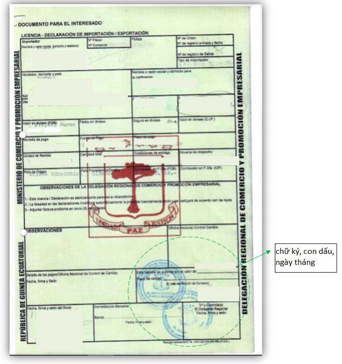

Implementing Timber Leglity Assurance Systems
A guide to comply with timber legality requirements in Cameroon and to support due diligence

GUINEA
Equitorial Guinea’s Timber legality requirements
Equatorial Guinea has not yet entered into negotiations for a Voluntary Partnership Agreement with the European Union. The timber legality assurance system has not been developed in this country and there are many identified risks for timber importers. Compliance with national laws and helping to prevent the import of illegal timber into other countries is highly dependent on the Government developing an effective control and verification system, operators complying with legal requirements and conducting due diligence. By being aware of the legal requirements in Equatorial Guinea highlighted below, law enforcement agencies and importers can implement control and risk mitigation measures to prevent timber being illegally harvested, transported and traded. Importers and verification agencies may refer to or use this definition in implementing due diligence.
Suggestions for developing and implementing due diligence for importers
Due diligence and complexity

Developing due diligence systems
Implementing due diligence
The following documents are selected in accordance with Equatorial Guinea’s legal definition and/or legal requirements in different stages of the supply chain
Business Registration Certificate (Certificado de registro de empresas (N.I.F.))

A business registration certificate signed and stamped by the Ministry of Finance, Economy and Planning verifies that the logging and wood processing companies meet all requirements for harvesting and processing activities. Check the signature, seal, and validity date on the certificate.
Business Accreditation (Certificado de acta de registro de promocion empresarial -P.E.)
The Business Accreditation is issued to the logging and wood product processing company signed by the Prime Minister. Check the signature, seal, and validity date on the certificate.
Timber Harvesting Activity Lease Agreement (Contratos de Arrendamiento por Aprovechamiento Forestal - CAAF) (for national forests)

The Timber Harvesting Activity Lease Agreement is issued to the company signed by the President. Check the information on the contract, signature and seal, validity of date, documents attached to this agreement such as harvesting license, measurement certificate.
Timber Cutting License
A timber cutting license is issued to an organization/company that has atimber harvesting activity lease agreement at the logging site signed and issued by the Ministry of Agriculture, Livestock, Forestry and Environment (Ministerio de Agricultura, Ganadería, Bosques y Medio) Ambiente - MAGBMA). Check signature and seal, validity of date on this license.
Measurement Certificate
The measurement certificate applied to lease timber harvesting activity is carried out by the organization/company that is granted the harvesting lease. Check the signatures and seals of the parties, the validity of date on the measurement certificate.
Taxpaying Capability Statement
Taxpaying Capability Statement signed by the Regional Representative of the MAGBMA. Check signature and seal, validity date on the declaration.
Transport Permit
The transport permit applied to the transport of harvested timber products is issued to the timber transport company signed by the Regional Representative of the Ministry of Forestry. Check the signature and seal, the validity of date on the transport permit.
Shipping License
The shipping license applied to the export of forest products is signed by the Regional Representative of the Ministry of Agriculture, Livestock, Forestry and Environment. Check the signature and seal, the validity of date on the shipping license.
Export license (Licencia – Declaracion de importacion /Exportacion)
The export license is issued to the timber processing company by the Regional Representative of the Ministry of Trade and the Agency for the Promotion of Small and Medium Enterprises (Delegacion regional de comercio y Promocion empresarial). Check the signature, seal, validity of date, photo of the company representative on the license.
Certificate of Origin and Legality

Certificate of origin and legality is signed by the Auditor of the Chamber of Commerce, Agriculture, Forestry and Industry for the exporter of wood products. Check the signature and seal of the right authority.
Certificate of entry (Certificado de acta de registro de promocion empresarial -P.E.)
The Certificate of entry is issued to the wood processing company signed by the regional representative of the Ministry of Industry and Energy. Check the signature, seal, and validity of date on the certificate. (Name of original document: / Enterprise certificate).
Industrial processing agreement
Industrial processing agreement is signed by the regional representative of the Ministry of Agriculture, Livestock, Forestry and Environment. Check the signature, seal of the right authority, validity of date on the agreement.
Labor contract
The labor contract is drawn up by the company harvesting forest resources and signed by both the company representative and the employee. Check the contract registered with the Ministry of Labor, complete and accurate information and seal.